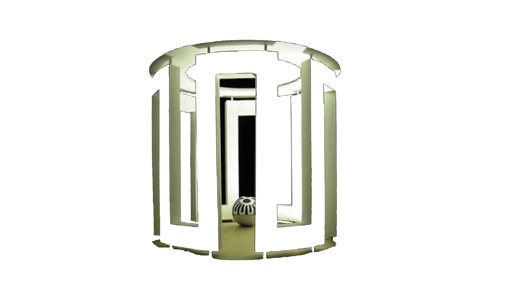

<DOCTYPE HTML>
    <html lang="no">
	    <head>
		    <title></title>
			<meta charset="utf-8">
			<link rel="stylesheet" type="text/css" href="" />
			<link rel="preconnect" href="https://fonts.gstatic.com">
            <link href="https://fonts.googleapis.com/css2?family=Nunito&display=swap" rel="stylesheet">
			
			<script>
			window.onload = oppstart;
			
			var arr1970 = [];
			arr1970[0] = [-1.8, 4.1, 1.3, -6.0, -2.3, 2.5, -1.3, 0.8, 1.8, 1, 3.3, 0.8, 1, -1.7, 2.3, 1.9, 5.1, 1.3, 0.2, 1.1, 2.9, 2.7, -1.6, -1.6, -2.5, -4.6, -0.2, -1.4, -1.7, -2.0];
			arr1970[1] = [8.7, 9.2, 6.2, 5.3, 8.4, 8.6, 6.4, 7.2, 6.2, 6.7, 9.2, 4.5, 4.8, 9.9, 8.8, 10.9, 10.4, 9.6, 10.2, 8.0, 8.0, 8.1, 9.2, 7.3, 4.8, 4.7, 4.4, 4.2, 5.3, 5.8];			
			var arr2021 = [];
			arr2021[0] = [1, 0.1, 0.3, -0.8, -3.5, 0.2, -1.7, -3.5, 0.2, -1.7, -3.5, -1.9, -1.7, -1.5, -3.6, -0.3, -1, -2, -2, -2.5, -1, -0.5, 0.1, 1.6, 1, -0.4, -2.5, 0, -0.8, -1.5];			
			arr2021[1] = [1.0, 3.3, 5.4, 7.4, 3.1, 4.1, 3.4, 2.5, 2.8, 2.4, 6.8, 4.2, 3.2, 6.1, 7.0, 1.0, 9.6, 11.9, 12.9, 15.8, 6.5, 1.0, 4.1, 4.6, 4.9, 5.1, 4.4, 1.0, 6.3, 5.3];
			
			var farge;
			var dato = 0;
			
			function oppstart() {
				
				var select = document.getElementById("lstVelgDag");
				for(var i = 0; i < arr2021[0].length; i++) {
					var opt = i;
					var el = document.createElement("option");
					el.innerHTML = i + 1;
					select.appendChild(el);
				}
				
				document.getElementById("lstVelgTid").onchange = visTemp;
				document.getElementById("btnAuto").onclick = interval;
				document.getElementById("btnStop").onclick = stopAuto;
			}
			
			function visTemp() {
				var valgtDag = document.getElementById("lstVelgDag").value;
				var valgtTid = document.getElementById("lstVelgTid").value;
				var farge;
				var temp70 = parseFloat(arr1970[valgtTid][valgtDag - 1]);
				var temp21 = parseFloat(arr2021[valgtTid][valgtDag - 1]);

				var forskjell = temp70 - temp21;
				if(forskjell > 7) {
					document.body.style.backgroundColor = "purple";
					farge = "Lilla";
				<!-- lilla	 -->
				}
				else if(forskjell > 4){
					document.body.style.backgroundColor = "blue";
					farge = "Blå";
					<!-- blå -->
				}
				else if(forskjell > 1) {
					document.body.style.backgroundColor = "green";
					farge = "Grønn";
					<!-- grønn -->
				}
				else if(forskjell === 0) {
					document.body.style.backgroundColor = "white";
					farge = "Hvit";
					<!-- hvit -->
				}
				else if(forskjell > -1){
					document.body.style.backgroundColor = "yellow";
					farge = "Gul";
					<!-- gul -->
				}
				else if(forskjell > -4){
					document.body.style.backgroundColor = "orange";
					farge = "Oransje";
				<!-- oransje -->
				}
				else if(forskjell >- 7){
					document.body.style.backgroundColor = "red";
					farge = "Rød";
					<!-- rød -->
				}
				document.getElementById("txtVis").innerHTML = "Dato: " + valgtDag + ". april" + "<br />" + "Temperatur i 1970: " + temp70 + "<br />" + "Temperatur i 2021: " + temp21 + "<br />" + "Farge: " + farge;
				
			}
			var interval;
			
			function interval() {
				interval = setInterval(autoTemp, 2000);
			}
			
			function autoTemp() {
				dato++;
				var temp70Auto = arr1970[1][dato];
				var temp21Auto = arr2021[1][dato];
				
				var forskjell = arr1970[1][dato] - arr2021[1][dato];
				if(forskjell > 7) {
					document.body.style.backgroundColor = "purple";
					farge = "Lilla";
				<!-- lilla	 -->
				}
				else if(forskjell > 4){
					document.body.style.backgroundColor = "blue";
					farge = "Blå";
					<!-- blå -->
				}
				else if(forskjell > 1) {
					document.body.style.backgroundColor = "green";
					farge = "Grønn";
					<!-- grønn -->
				}
				else if(forskjell === 0) {
					document.body.style.backgroundColor = "white";
					farge = "Hvit";
					<!-- hvit -->
				}
				else if(forskjell > -1){
					document.body.style.backgroundColor = "yellow";
					farge = "Gul";
					<!-- gul -->
				}
				else if(forskjell > -4){
					document.body.style.backgroundColor = "orange";
					farge = "Oransje";
				<!-- oransje -->
				}
				else if(forskjell >- 7){
					document.body.style.backgroundColor = "red";
					farge = "Rød";
					<!-- rød -->
				}
				if (dato > 30){
					dato = 1;
					
				}
				document.getElementById("txtVis").innerHTML = "Dato: " + dato + ". april" + "<br />" + "Temperatur i 1970: " + temp70Auto + "<br />" + "Temperatur i 2021: " + temp21Auto + "<br />" + "Farge: " + farge;
			}
			
			function stopAuto() {
				clearInterval(interval);
				dato = 1;
			}
			</script>
			
			<style>
				body {
					width: 100%;
					height: 100%;
					background-color: blue;
					overflow-y: hidden;
					overflow-x: hidden;
					font-family: 'Nunito', sans-serif;
				}
				
				.background {
					width: 100vw;
					height: 100vh;
					z-index: -1;
					position: fixed;
					top: 0;
					left: 0;
				}
				
				h1 {
					padding-top: 10px;
					color: white;
				}
				
				h3 {
					color: white;
				}
			</style>
		</head>
		
		<body>
		<div id="wrapper">
			
			
			<h1>Reflexions Trondheim</h1>
			<h3>Automatisk lysfremvisning</h3>
			<p><button style="button" id="btnAuto">Start</button></p>
			<p><button style="button" id="btnStop">Stopp automatisk</button></p>
			<br />
			<select id="lstVelgDag"> 
				<option>Velg Dag i April...</option>
			</select>
			<select id="lstVelgTid">
				<option>Velg tid...</option>
				<option value="0">Natt</option>
				<option value="1">Dag</option>
			</select>
			<p id="txtVis" style="color: white;"></p>
		</div>
    	</body>
	<html>	